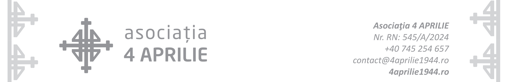

Comemorarea victimelor civile ale bombardamentelor din 4 Aprilie 1944 — solicitare de sprijin
În atenția
Cabinetului Patriarhal,
Cancelariei Sfântului Sinod
Subsemnații, în numele Asociației 4 Aprilie, vă adresăm aceste rânduri ca expresie a unei inițiative civice menite să păstreze vie memoria victimelor civile ale bombardamentelor care au lovit Bucureștiul începând cu ziua de 4 aprilie 1944 — moment ce a deschis una dintre cele mai dureroase perioade din istoria recentă a orașului.
Numai în prima zi a atacurilor aeriene, aproximativ 3.000 de civili — îndeosebi copii, femei și vârstnici — și-au pierdut viața, iar alți aproximativ 3.000 au fost răniți. În acele împrejurări, când majoritatea bărbaților se aflau pe front, orașul a rămas locuit în principal de familii lipsite de apărare, expuse unei tragedii de proporții greu de cuprins.
De patru ani, asociația noastră organizează, la Biserica „Sfinții Împărați Constantin și Elena” și „Sfânta Cuvioasă Parascheva”, slujbe de parastas pentru pomenirea celor care și-au pierdut viața în aceste împrejurări tragice. Începând cu acest an, ne dorim ca actul comemorativ să capete o dimensiune mai amplă, prin implicarea cât mai largă a comunității, devenind un moment de reculegere la nivelul întregii Capitale.
În absența unei comemorări la nivel comunitar și instituțional, Asociația 4 Aprilie și-a asumat, în ultimii ani, responsabilitatea de a readuce în conștiința publică aniversarul tragic al zilei de 4 aprilie 1944, un moment de profundă suferință colectivă care, deși definitoriu pentru istoria Bucureștiului, a rămas multă vreme uitat și lipsit de recunoașterea cuvenită.
Astfel, începând cu anul 2024, ca prim gest de aducere-aminte solemnă, un număr însemnat de lăcașuri de cult din zonele direct afectate de bombardamente au răspuns inițiativei noastre, trăgând clopotele timp de un minut, la data de 4 aprilie, ora 13:45 — momentul exact al declanșării atacului aerian. Ne dorim ca această formă de pomenire să capete un caracter unitar și să fie împărtășită de toate bisericile din Capitală, ca semn de unitate în credință și de cinstire a memoriei celor adormiți, după modelul unor orașe din Italia — precum Albano Laziale, Civitavecchia, Frascati, La Spezia, Lanciano, Montecassino, Roma, Vicenza, Zappata Sulmona ș.a. — unde comemorarea victimelor bombardamentelor din aceeași perioadă are un caracter atât religios, cât și instituțional, fiind marcată prin slujbe, ceremonii publice și participarea autorităților locale, a reprezentanților statului, a Președintelui Republicii și chiar a Sanctității Sale Papa.
În aceeași linie a cultivării memoriei istorice, demersul inițiat de Asociația 4 Aprilie în urmă cu șapte ani, având ca obiectiv ridicarea unei troițe comemorative în memoria victimelor bombardamentelor din aprilie 1944, se apropie de împlinirea sa. Recenta clarificare, de către Primăria Municipiului București, a situației juridice a Cimitirului 4 Aprilie și a regimului de proprietate asupra terenului aferent a înlăturat un obstacol major care, până în prezent, a împiedicat materializarea acestui proiect memorial, deschizând astfel calea unei asumări publice și instituționale a acestui act de pomenire.
Prin același ajutor al Primăriei Municipiului București, am fost puși în legătură cu Centrul de Cultură „Palatele Brâncovenești de la Porțile Bucureștiului", instituție care și-a manifestat disponibilitatea de a contribui concret la realizarea troiței.
Suntem încredințați că implicarea Bisericii Ortodoxe Române, prin participarea unui număr cât mai mare de lăcașuri de cult, va conferi acestor inițiative o însemnătate duhovnicească sporită, contribuind la întărirea memoriei colective, a conștiinței istorice și a solidarității creștine.
Cu nădejdea că aceste demersuri vor afla bunăvoință, sprijin și îndrumare, vă rugăm cu aleasă considerație să binevoiți a ne acorda susținerea dumneavoastră pentru împlinirea acestor acte de pomenire și cinstire a memoriei celor adormiți.
Vă mulțumim pentru atenția acordată și pentru sprijinul pe care ni-l veți putea oferi.
Cu deosebită considerație,
Consiliul Director al Asociației 4 Aprilie

(sursa: 4aprilie1944.ro)